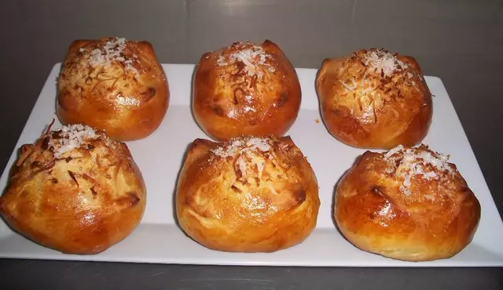

Coconut Bread

Coconut bread is a sweet bread that is commonly eaten with either tinto (coffee) or coffee with milk. However, some people eat it even with hot chocolate. Crazy! A video recipe (in spanish) can be found here.
Ingredients
- 500 grams strong white bread flour
- 200 millimeters coconut milk
- 100 grams butter
- 1/2 teaspoon salt
- 100 grams sugar
- 1 tablespoon sugar
- 2 tablespoons vanilla extract
- 1 beaten eggs to glaze
- 1 sachet dry yeast (7 grams)
- 100 grams dehydrated coconut for cooking and decorating
Preparation
- Prepare the yeast in 3 tablespoons of warm water and 1 teaspoon of sugar.
- Put the flour into a bowl and add the sugar, salt, butter, water, beaten eggs, vanilla extract and the yeast mixture.
- Mix to a soft dough and knead it on a floured surface. Do it until the dough is smooth and elastic.
- Put in an oiled bowl, cover with clingfilm and leave to rise in a warm place until it has doubled in size.
- Re-knead the dough for some minutes and put onto a floured surface again. Then cut into 10 or 12 pieces.
- Take one piece at a time and make a ball. Pinch the edges together to enclose.
- Put seam-side down on baking sheet or with baking grease paper.
- Leave to rest for 30 minutes.
- Make a few cuts on the top of each bun (look at the image to see how it should look).
- Glaze the buns with the beaten egg and add some coconut in the top.
- Pre- heat the oven at 180º Celsius - 350º Fahrenheit.
- Put the baking sheet in the middle of the oven and cook until golden.